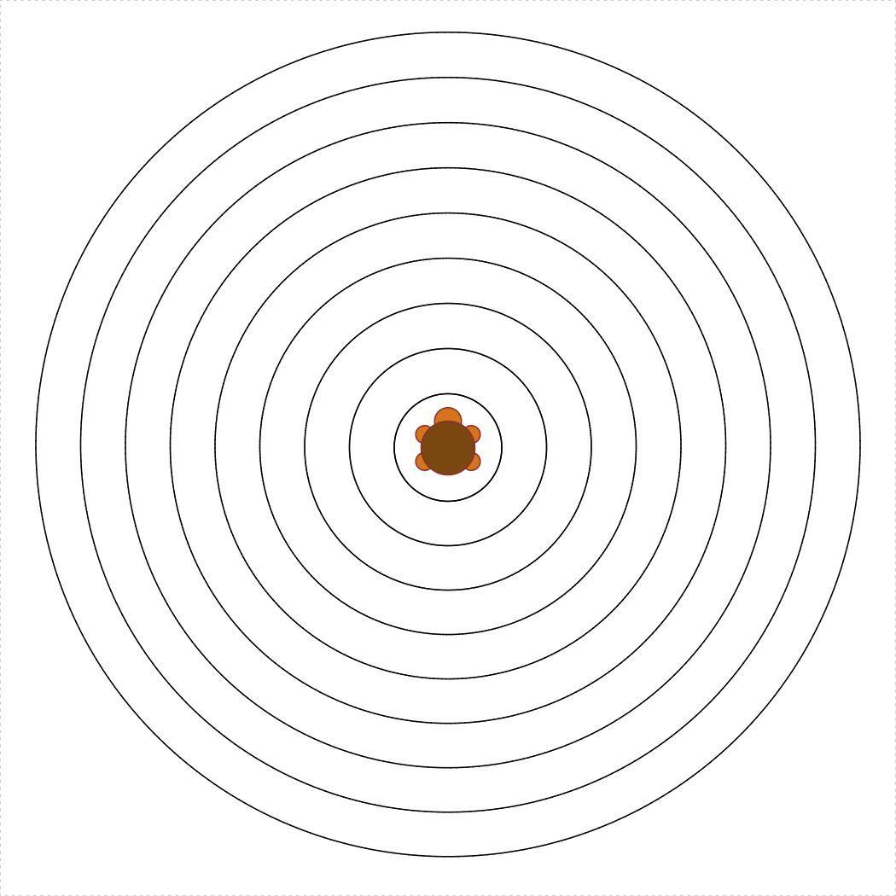

Practice 5 - Loops
Hint: Read the Vectors Tips page - these could come in handy!
Write functions
Here are a bunch of functions you should be able to write. Any of these may appear (directly or modified) on a quiz or exam! Your function should be able to pass the test functions provided.
for loops
Sum from m to n
There are many ways to sum the integers between two bounds,
m and n.
a) loopSumFromMToN(m, n)
Use a for loop to sum the total of the integers between
m and n.
testLoopSumFromMToN <- function() {
cat("Testing loopSumFromMToN()...")
stopifnot(loopSumFromMToN(5, 10) == (5+6+7+8+9+10))
stopifnot(loopSumFromMToN(1, 1) == 1)
stopifnot(loopSumFromMToN(0, 0) == 0)
stopifnot(loopSumFromMToN(0, 7) == (1+2+3+4+5+6+7))
cat("Passed!\n")
}b) vectorSumFromMToN(m, n)
Use a vector (no loops!) to sum the total of the integers between
m and n.
testVectorSumFromMToN <- function() {
cat("Testing vectorSumFromMToN()...")
stopifnot(vectorSumFromMToN(5, 10) == (5+6+7+8+9+10))
stopifnot(vectorSumFromMToN(1, 1) == 1)
stopifnot(vectorSumFromMToN(0, 0) == 0)
stopifnot(vectorSumFromMToN(0, 7) == (1+2+3+4+5+6+7))
cat("Passed!\n")
}c) formulaSumFromMtoN(m, n)
Use a closed formula (no vectors or loops!) to sum the total of the
integers between m and n. Hint: Wikipedia
is helpful :)
testFormulaSumFromMtoN <- function() {
cat("Testing formulaSumFromMtoN()...")
stopifnot(formulaSumFromMtoN(5, 10) == (5+6+7+8+9+10))
stopifnot(formulaSumFromMtoN(1, 1) == 1)
stopifnot(formulaSumFromMtoN(0, 0) == 0)
stopifnot(formulaSumFromMtoN(0, 7) == (1+2+3+4+5+6+7))
cat("Passed!\n")
}d) sumEveryKthFromMToN(m, n, k)
Use a for loop to sum every kth integer between
m and n.
testSumEveryKthFromMToN <- function() {
cat("Testing sumEveryKthFromMToN()...")
stopifnot(sumEveryKthFromMToN(5, 20, 7) == (5 + 12 + 19))
stopifnot(sumEveryKthFromMToN(1, 10, 2) == (1 + 3 + 5 + 7 + 9))
stopifnot(sumEveryKthFromMToN(0, 0, 1) == 0)
cat("Passed!\n")
}e) sumOfOddsFromMToN(m, n)
Use a for loop to sum every odd integer between
m and n.
testSumOfOddsFromMToN1 <- function() {
cat("Testing sumOfOddsFromMToN1()...")
stopifnot(sumOfOddsFromMToN1(4, 10) == (5 + 7 + 9))
stopifnot(sumOfOddsFromMToN1(5, 9) == (5 + 7 + 9))
cat("Passed!\n")
}fizzBuzz()
The “Fizz-Buzz test” is a classic interview question for programming
job candidates. Write a function that prints the numbers from 1 to 100
(with each number on a new line), but for multiples of 3
print “Fizz” instead of the number, and for multiples of 5
print “Buzz”. For numbers which are multiples of both 3 and
5 print “FizzBuzz”. The first 16 lines of
fizzBuzz() should read:
1
2
"Fizz"
4
"Buzz"
"Fizz"
7
8
"Fizz"
"Buzz"
11
"Fizz"
13
14
"FizzBuzz"
16while loops
nthMultipleOf4Or7(n)
Find the nth positive integer that is a multiple of either 4 or 7.
Hint: you should write a helper function called
isMultipleOf4Or7(n) that returns TRUE if
n is a multiple of 4 or 7 and FALSE
otherwise.
testNthMultipleOf4Or7 <- function() {
cat("Testing nthMultipleOf4Or7()...")
stopifnot(nthMultipleOf4Or7(1) == 4)
stopifnot(nthMultipleOf4Or7(2) == 7)
stopifnot(nthMultipleOf4Or7(3) == 8)
stopifnot(nthMultipleOf4Or7(4) == 12)
stopifnot(nthMultipleOf4Or7(5) == 14)
stopifnot(nthMultipleOf4Or7(6) == 16)
stopifnot(nthMultipleOf4Or7(10) == 28)
cat("Passed!\n")
}Prime Numbers
Background: Read up on the Wikipedia page on prime numbers. We
want to write the function nthPrime(n). However, to write
that function, we’ll first need to write isPrime(n), which
determines whether a number is prime or not.
a) isPrime(n)
Write the function isPrime(n) which takes a non-negative
integer, n, and returns TRUE if it is a prime
number and FALSE otherwise.
testIsPrime <- function() {
cat("Testing isPrime()...")
stopifnot(isPrime(1) == FALSE)
stopifnot(isPrime(2) == TRUE)
stopifnot(isPrime(7) == TRUE)
stopifnot(isPrime(13) == TRUE)
stopifnot(isPrime(14) == FALSE)
cat("Passed!\n")
}b) nthPrime(n)
Write the function nthPrime(n) which takes a
non-negative integer, n, and returns the nth prime number,
where nthPrime(1) returns the first prime number (2).
testNthPrime <- function() {
cat("Testing nthPrime()...")
stopifnot(nthPrime(1) == 2)
stopifnot(nthPrime(2) == 3)
stopifnot(nthPrime(3) == 5)
stopifnot(nthPrime(4) == 7)
stopifnot(nthPrime(7) == 17)
cat("Passed!\n")
}Turtle loops!
turtleCircleInSquare(s)
Write the function turtleCircleInSquare(s) that uses the
TurtleGraphics library to draw a circle inscribed inside a
square with side s < 100. The square and circle should
be centered in the turtle’s terrarium. Hint: You may want to use
turtleSquare(s) and turtleCircle(r) as helper
functions! The following code should produce a circle inscribed inside a
square with a side length of 50:
library(TurtleGraphics)
turtle_init()
turtle_do({
turtleCircleInSquare(50)
})
concentricTurtleCircles(spacing = 5)
Write the function concentricTurtleCircles(spacing) that
uses the TurtleGraphics library to draw concentric circles
from the center of the terrarium and outward. The spacing
argument determines the spacing between each circle, and the default
value should be spacing = 5. Also,
spacing >= 1, and your function must not allow the
turtle to escape the terrarium. Hint: you may want to use
turtleCircle(r) as a helper function. The following code
should produce concentric circles with a spacing of 5:
library(TurtleGraphics)
turtle_init()
turtle_do({
concentricTurtleCircles()
})
concentricTurtleCircleInSquares(spacing = 5)
Write the function
concentricTurtleCircleInSquares(spacing) that uses the
TurtleGraphics library to draw concentric circles inscribed
in squares from the center of the terrarium and outward. The
spacing argument determines the spacing between each
circle, and the default value should be spacing = 5. Also,
spacing >= 1, and your function must not allow the
turtle to escape the terrarium. Hint: you may want to use
turtleCircleInSquare(s) as a helper function. The following
code should produce concentric circles inscribed in squares with a
spacing of 5:
library(TurtleGraphics)
turtle_init()
turtle_do({
concentricTurtleCircleInSquares()
})
Page sources:
Some content on this page has been modified from other courses, including:
- CMU 15-112: Fundamentals of Programming, by David Kosbie & Kelly Rivers
- Danielle Navarro’s website “R for Psychological Science”
George Washington University | School of Engineering & Applied Science
Dr. John Paul Helveston | jph@gwu.edu | Mondays | 6:10–8:40 PM | Phillips Hall 108 | |
This work is licensed under a Creative Commons Attribution 4.0 International License.
See the licensing page for more details about copyright information.
Content 2019 John Paul Helveston